讀者
匯入或新增讀者前，應先設定您的 讀者類型。
新增讀者
進入 ‘讀者’ 模組新增讀者。
到那： 讀者
到了那裡後，就能新增讀者。
按 ‘新增讀者’
备注
The fields that appear on the patron add form can be controlled by editing the BorrowerUnwantedField system preference.
备注
Required fields are defined in the BorrowerMandatoryField system preference
首先，鍵入辨識讀者的資訊
‘Salutation’ is populated by the BorrowersTitles system preference
备注
不想在 收條 使用全稱或縮寫或其他名稱欄位的內容，可以在收條使用簡稱。
範例：
Firstname: Nicole C. Surname: Engard Initials: NCE
然後可在收條列印 <<borrowers.initials>> 而不是全名 (NCE)。
或您可以這麼做：
Firstname: Nicole Surname: Engard Initials: E
然後可在收條列印 <<borrowers.initials>>, <<borrowers.firstname>> 而不是全名 (E, Nicole)。
兒童讀者必須附屬於成人讀者(擔保人)
备注
Guarantors can only be attached to patrons whose category has ‘Can be guarantee’ set to ‘Yes’.
If the guarantor is a patron of the library, click ‘Add guarantor’ to search your system for an existing patron
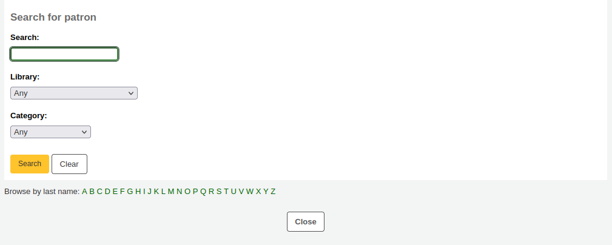
點擊 ‘選擇’ 選擇讀者
The relationships are set using the borrowerRelationship system preference
备注
可以在一個讀者帳戶上增加一個以上的擔保人（例如父母雙方）。
如果擔保人不是讀者，你仍然可以在 ‘非讀者擔保人’ 部分新增他們的訊息。
接下來輸入主要地址和聯繫資訊
备注
The street type drop-down menu is populated by the ROADTYPE authorized values

對聯絡資訊而言，主要電話號碼和主要電子郵件地址都出現在流通的印本通知與收條(包括轉移收條與預約收條)。主要電子郵件也是接收逾期通知與其他通知的管道。
The ‘Main contact method’ can be used in reports and for staff to know which method to use first when trying to contact the patron.
你還可以為每個讀者記錄一個備用地址。例如，這可以在學術環境中用於儲存讀者的住家地址。
每個讀者都可以有一個備用聯繫人。例如，備用聯繫人可以是父母或監護人。
圖書館管理區塊包括圖書館內部用的值
The card number field is automatically calculated if you have the autoMemberNum system preference set that way
备注
For a newly installed system, this preference will start at 1 and increment by 1 each time after. To have it start with the starting number of your barcodes, enter the first barcode by hand in the patron record and save the patron. After that, the field will increment that number by 1.
當初選錯讀者類型，可以在這裡修訂
排序1與2用於圖書館的統計
你可以通過在Bsort1和Bsort2 :ref:`容許值類別<existing-values-label>`中新增數值來為這些欄段建立下拉式選單。
‘允許自動續借物品 ‘用於控制該讀者的借閱是否會根據流通規則進行續借。如果設置為 ‘是’，流通規則中啟用自動更新的物品將被自動更新。這就要求 :ref:`自動_更新 工作排程 <cron-automatic-renewal-label>`每天運行。如果設置為 ‘否’，流通規則中啟用自動更新的館藏將不會被自動更新。
Protected: protected patrons cannot be deleted either manually or by batch. Use this for system patrons such as statistical patrons, SIP2 patrons, the self checkout user, or superadmins.
Version
The ‘Protected’ option is available from Koha version 23.11.
‘Check for previous checkouts’ is used to set the patron’s personal preference regarding checking their circulation history to see if they have borrowed This item in the past. This overrides the setting of the patron category and of the CheckPrevCheckout system preference.
接著，圖書館設定區塊包括其他的設定
‘登入OPAC /館員介面時’部分要求使用者（或館員）使用使用者名稱和密碼登入他們在 OPAC 中的帳戶，並要求館員登入館員界面。
館員只有在至少擁有 :ref:`目錄權限<patron-permissions-label>`的情況下，才能使用這個登入訊息登錄到館員介面。
If you have enabled the housebound module (with the HouseboundModule system preference), you will be able to choose a housebound role for this patron.
若你在管理模組中設定了 其他讀者屬性，接著會出現
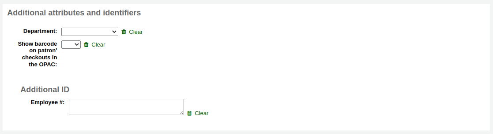
Finally, if you have the EnhancedMessagingPreferences system preference set to ‘allow,’ you can choose the messaging preferences for this patron.
參見 :ref:`預先通知和保留通知 <advance-notices-and-hold-notices-label>`部分中每個通知的定義
警告
此偏好取代在 讀者類型 的設定
警告
These preferences can be altered by the patron via the OPAC if the EnhancedMessagingPreferencesOPAC system preference is set to ‘show’.
做好後，勾選 ‘儲存’

若系統懷疑該讀者已重複，則提示。
备注
See the PatronDuplicateMatchingAddFIelds system preference to see or change which fields are used to detect duplicate patrons. The default is the surname, the firstname and the date of birth.
已在讀者類型設定年齡的下限或上限，且要求填入生日，若年齡在此範圍外，Koha 將警示：
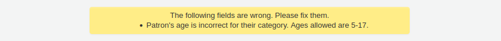
如果讀者的 :ref:`類別<patron-categories-label>`有註冊費，那麼在建立帳戶時，該費用將從該讀者的帳戶中扣除。然後你可以在讀者的 :ref:`會計標籤 <fines-label>`中管理這筆費用。
快速新增讀者
流通櫃台極為忙碌時，可以用 ‘快速新增’ 功能新增讀者。祗需填寫若干必要欄位，就能新增讀者。
This feature uses two system preferences: BorrowerMandatoryField and PatronQuickAddFields. These are the two system preferences that control which fields are in the quick add form.
進入 ‘讀者’ 模組，快速新增讀者
到那： 讀者
按 ‘快速新增讀者’ 鈕。
將被要求選定讀者屬性。
然後，出現簡短表單。
將表單填寫好後，按 ‘儲存’
需要近用完整表單時，可以按 ‘儲存’ 鈕上方的 ‘顯示完整表單’。
新增館員讀者
館員必須以 ‘Staff’ 類型的讀者登入 Koha。接著依照 新增讀者 的程序新增館員。然後依照 讀者權限 的程序，給予進入館員介面的權限
重要
記得給予館員安全的名稱與密碼，登入館員介面所需。
新增統計讀者
館內使用的追蹤方式之一，是把該等館藏 “借出” 給統計讀者。此 “借出” 並不是真的借出，祗是追蹤館內使用的館藏。需先設定 讀者屬性 供統計讀者使用。

接著，新增一個統計屬性的讀者。
接著，照著本手冊 ‘新增讀者’ 區塊的步驟。此類讀者不是真的讀者，祗需填入必備的欄位與正確的圖書館就夠了。
本手冊的 追蹤館內使用 章節，還有其他追蹤館藏使用的方法。
複製讀者
讀者的家族成員新辦讀者證時不需重新鍵入連絡資訊。Koha 允許您複製讀者資料再修改 (需要的) 的。
開啟讀者做為使用的基礎(做為複製之用)
勾選紀錄上方的 ‘重複’ 鈕

除了名、讀者號、姓與密碼外，其他欄位都是重複的。填入資料再按 ‘儲存’
說明
點入已有資料的欄位，將清除其中的資訊(鍵入資料會容易些)
進入新讀者
Adding patron images
You can add patron pictures to help identify patrons. To enable this feature, you must first set the patronimages system preference to ‘Allow’.
If the preference is set to ‘Allow’, you will see a placeholder image under the patron’s name on the left of the screen.
Click the ‘Add’ button on the placeholder image.
You have the option of either uploading an existing picture from the computer or taking a picture with the webcam.
To upload an existing image, click ‘Browse’ or ‘Choose file’ to find the image on your computer and click ‘Upload’ to load the image in the patron’s file.
警告
每張照片的大小不能超過 100K，建議解析度不超過 200x300 圖素。
To take a picture with the webcam, click the ‘Take photo’ button once the webcam is facing the patron. The system will take a picture and present it to you for review. If you are satisfied, click ‘Upload’. If not, click ‘Retake photo’ to take a new picture. You can also download the picture by clicking ‘Download photo’.
使用 上傳讀者照片 工具，上傳大批讀者照片。
編輯讀者
以任何一個編輯鈕就能編輯讀者。
按下讀者紀錄上方的 ‘編輯’ 鈕，就能編輯整個讀者紀錄。
勾選區塊 (如：’圖書館使用’) 裡的 ‘編輯’ 連結，就能編輯讀者紀錄的 特定區塊。
Edit the patron’s file and click ‘Save’.
Modifying patron passwords
Patron passwords are not recoverable.
The stars on the patron details page next to the password label are always there even if a password isn’t set.
If a patron forgets their password, the only option is to reset their password.
This can be done from the staff interface. To change the patron’s password, click the ‘Change password’ button.
Koha不能顯示密碼，資料庫祗保留加密後的密碼。保留該欄位空白，即未改變密碼。
若您點選標示為 “勾選將產生隨機建議。密碼以純文字顯示。” 此表單就能自動產生隨機密碼
通過這個表格修改密碼，也會更新密碼的有效期，正如在 :ref:`讀者類型<patron-categories-label>`中設置的那樣。
If the NotifyPasswordChange system preference is enabled, the patron will receive a notification indicating their password was changed.
备注
The content of this email can be customized with the Notices and slips tool. The code of the letter is PASSWORD_CHANGE.
If the OpacResetPassword system preference is enabled, or if the patron category allows it, you can also send a password reset email to the patron by clicking on ‘More’ and choosing ‘Send password reset’.

This will send a password reset email to the patron, similar to the one sent if they click on the ‘Forgot your password?’ link on the OPAC. However, the reset link is set to expire after 5 days rather than 2 days when it is sent this way.
备注
The content of the email can be customized with the Notices and slips tool. The code of the letter is STAFF_PASSWORD_RESET.
只有擁有 ‘超級圖書館員’ 權限的館員才能看到並手動更改密碼的到期日。這個日期可以通過點擊讀者記錄頂端的 ‘編輯’ 按鈕，或 ‘圖書館使用’ 部分旁邊的 ‘編輯’ 按鈕來改變。
Adding patron flags
Restrictions are used to prevent patrons from checking out.
Patrons can also be blocked from checking items out by setting patron flags.
If you would like your circulation staff to confirm a patron’s address before checking items out to the patron, set the ‘Gone no address’ flag. This will create a warning when checking out.

If the patron reports that they have lost their card you can set the ‘Lost card’ flag to prevent someone else from using that card to check items out.

If you would like to bar a patron from the library you can add a manual restriction.
备注
This is the same as the restrictions tab at the bottom of the patrons details page.
备注
A patron can automatically be restricted with the Overdue/notice status triggers
If you enter in a date and/or note related to the restriction, you will see that in the restricted message as well.
Adding notes and messages to a patron record
You can leave notes in a patron record. There are several ways to do this: you can either add a circulation note or an internal message. These will not show in the OPAC for the patron to see. If you want the patron to see the notes and messages, use OPAC notes and OPAC messages.
Circulation notes
Circulation notes are added to the patron’s file through the add patron form or the edit patron form, in the ‘Library set-up’ section.
In the staff interface, circulation notes will be in the ‘Library use’ section of the patron’s file.
Circulation messages
Internal messages are added to the patron’s file using the ‘Add message’ button.
To leave an internal message, choose “Staff - Internal note” in the ‘Add a message for’ field. Enter your message in the box, or choose a predefined message in the drop-down menu.
备注
預定義的訊息被新增到 BOR_NOTES :ref:`容許值價值類別<existing-values-label>`中
Once saved, the internal message is shown in bold red on the patron’s detail page in the staff interface, at the top of the page just under the row of action buttons.
它也會出現在借出頁面，在借出箱的右邊。
If you need to edit the message, click the ‘Edit’ button next to the message, edit the text and click ‘Save’.
Changing children to adults
Children patrons do not become adults automatically in Koha unless the update patron categories cron job is running.
To upgrade a child patron to and adult patron category manually go to the ‘More’ menu and choose ‘Update child to adult patron’.
You will then be presented with a pop up window asking which one of your adult patron categories this child should be updated to.
备注
This list shows the patron categories that have the category type ‘adult’.
延長讀者帳號的期限
以人工方式編輯到期日，或以從上方工具選項的更多選單裡，點選 ‘更新讀者’ 選項，就能夠更新讀者帳號。

Using the latter the new expiry date will be calculated using the enrollment period configured for the patron category of the user. The system preference BorrowerRenewalPeriodBase determines if the new expiry date will be calculated from the current date or from the old expiry date.
使用 ‘更新讀者’ 選項，可以讀者身份在 action_logs 表單更新，並可從讀者帳號使用 記錄檔檢視器 或 修改記錄檔。
可在詳情分頁看到讀者帳號的更新日期。

如果讀者在一個 :ref:`讀者類別 <patron-categories-label>`中，有會員費，續費時也會增加費用。然後，你可以在讀者的 :ref:`會計標籤 <fines-label>`中管理該費用。
刪除讀者帳戶
從 ‘更多’ 下拉選單中，可以刪除讀者帳號。
如果顧客有結帳、預約、罰款或積分，就會有提示。
如果顧客目前有借出，則無法刪除。
如果讀者有未付的罰款，就不可能刪除。

如果一個讀者有未使用的積分，可以選擇刪除該讀者，但會有一個警告。

If a patron has existing holds on their account, the option to delete the patron is possible. The hold will be cancelled and moved to the old_reserves table.

If a patron has public or shared lists, those will be deleted along with the patron, unless the ListOwnershipUponPatronDeletion system preference is set to ‘change owner of these lists’.
If a patron is protected, the ‘Delete’ option will be disabled. To delete the patron anyway, edit the patron and choose ‘No’ under ‘Protected’ in the ‘Library management’ section, save, and then delete.
管理讀者自助編輯
If you are allowing patrons to edit their accounts via the OPAC with the OPACPatronDetails preference then you will need to approve all changes via the staff client before they’re applied. If there are patron edits awaiting action they will appear on the staff client dashboard below the modules list (along with other items awaiting action).

說明
超級圖書館員可看到所有分館的編修，其他館員祗能看到所屬圖書館讀者的編修。
勾選 ‘讀者要求修改’ 連結後，進入要求修改的讀者清單。

從這裡，您可以 ‘批准’ 並採用此改變於讀者記錄；’刪除’ 並移除這些改變；或 ‘忽略’ 並維持此改變待來日再決定。
可按右方的 ‘讀者詳情’ 鈕。就可在新分頁看到該讀者的完整內容。
合併讀者紀錄
同個讀者擁有兩張讀者證時，可以將其合併不必遺失任何借出與預約紀錄。
選欲合併的紀錄再按 ‘合併選定的紀錄’ 鈕就可。

說明
可以同時合併兩筆以上的紀錄。
選擇你想保留的讀者記錄

如果有必要，點擊 ‘比較讀者’ 按鈕，看看不同帳戶之間的差異。
按 ‘合併讀者’ 按鈕。
借出與統計將轉移至正確的紀錄，並刪除另個紀錄。

讀者權限
使用讀者權限讓館員讀者可以進入館員介面。
重要
館員必須有 (至少) ‘catalogue’ 權限，才能進入館員介面。
設定讀者權限
從讀者紀錄裡勾選 ‘更多’，選擇 ‘設定權限’ 改變該讀者的權限
顯示偏好清單, 點擊標題右側的’顯示詳細’連結展開偏好.
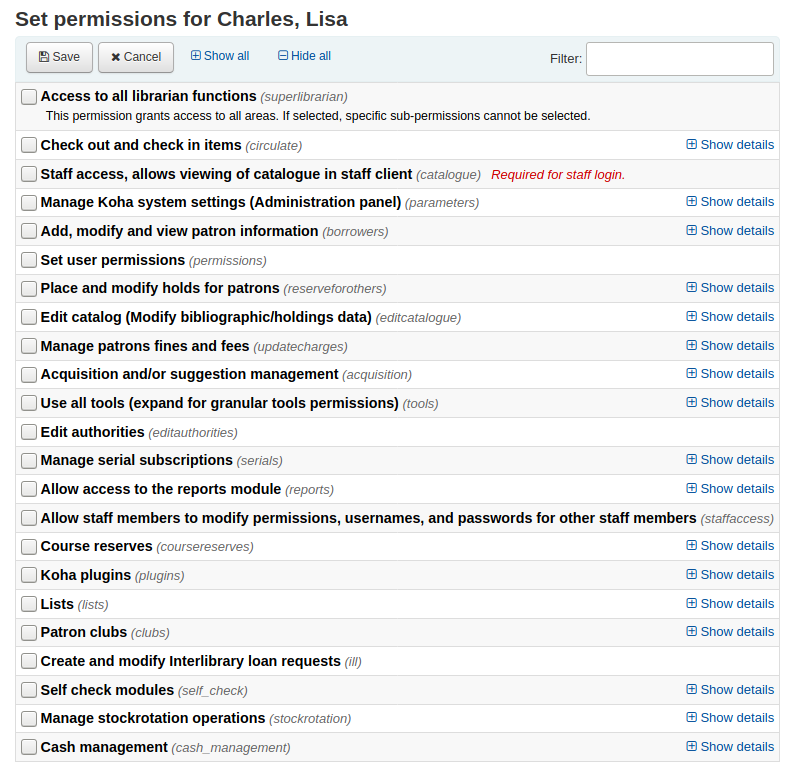
在任何情況下, 如果勾選父權限, 使用者則擁有所有子權限. 如果您想要更詳細的設置權限, 展開選項然後僅勾選您想要使用者所擁有的權限.
設定讀者權限
存取所有圖書館館員職責的權限(超級圖書館館員)
說明
選了它之後就不需再勾選其他權限
借出與還入館藏(流通)
保持流通權限 (流通_保持_權限)
這個權限准許所有流通權利除了以下列出權限涉及的權利
若有限制則強迫借出 (force_checkout)
在以下情況根據權限允許員工撤銷借出的限制:
年齡限制
此館藏已被其他讀者借出
此館藏不外借
持有逾期館藏的讀者
此館藏已遺失
此館藏是熱門館藏
此館館已被預約
將借出說明標記為已看/未看 (manage_checkout_notes)
- 使用者編輯管理借出說明的權限
透過OPAC
Manage curbside pickups (manage_curbside_pickups)
The permission to manage patron curbside pickup appointments
管理帳號的限制 (manage_restrictions)
授權館員移除讀者記錄裡的限制
執行逾期館藏報表 (overdues_report)
執行流通下逾期報表的權限
取消禁止續借 (override_renewals)
根據此權限, 如果有限制，員工可以撤銷續約
館員需同時具有流通_其他_權限
Staff access, allows viewing the catalogue in staff interface (catalogue) Required for staff login.
重要
This permission must be given to all staff members to allow them to log into the staff interface
This will allow access to the staff interface, with the possibility of
searching the catalogue (simple search, advanced search and item search)
searching the authorities
viewing the checkout history of a title (no patron information is shown)
creating private or public lists, adding items to private lists and public lists, if the public list permission allows it, editing and deleting private lists
using the cart
viewing course reserves
管理Koha系統設置 (管理面板) (參數)
管理帳戶借項和信用類型 (管理_帳戶)
近用至 借方類型區塊
管理購物籃或是訂閱費的額外欄位 (管理_額外的 _欄位)
近用至 其他欄位區塊
重要
權限要求員工要有從’管理連續性訂閱費’部分的’編輯現有的訂閱費’權限以及從’收購和/或是提議管理’部分的’管理購物籃和訂單行’權限
管理警示音效 (管理_音效_警示)
在管理模組近用 audio alerts 的組態.
管理容許值類型及其值 (manage_auth_ values)
在管理模組近用 auhorized values 的組態.
Manage background jobs (manage_background_jobs)
The ability to access the jobs management section of the administration module.
管理流通規則 (manage_circ_rules)
在管理模組近用 circulation and fines rules 的組態.
從任意圖書館管理流通規則 (管理_流通_規則_從_ 任意_圖書館)
若沒有設定，祗能從自己的圖書館登入編輯自己的流通規則
員工還是要有上面’管理流通規則’的許可.
管理縣市與鄉鎮 (manage_cities)
在管理模組近用 cities and towns 的組態.
管理分類法來源與排序規則 (manage_classifications)
在管理模組近用 classification sources 的組態.
管理欄的組態 (manage_column_config)
在管理模組近用 configure columns 頁面的能力.
Manage curbside pickups (manage_curbside_pickups)
The permission to manage curbside pickup slots and parameters in the administration module.
管理您的意思是？組態 (manage_didyoumean)
在管理模組近用 您的意思是？ 的組態權限。
Manage authentication providers (manage_identity_providers)
Grants access to the Identity providers configuration in the administration module.
管理館藏流通提示 (manage_item_circ_alerts)
在管理模組近用 item circulation alerts 的組態.
管理館藏搜索欄位 (管理_館藏_搜索_欄位)
在管理模組近用 item search fields 的組態.
管理館藏類型 (管理_館藏類型)
在管理模組近用 item types 的組態.
管理高級編目編輯器的鍵盤快捷鍵 (管理_ 鍵盤_快捷鍵)
在管理模組近用鍵盤熱鍵組態的能力
管理圖書館與圖書館群組 (manage_libraries)
在管理模組近用 libraries 與 library groups 的頁面組態.
管理Mana KB內容共享 (管理_mana)
從管理模組近用 與 Mana KB <share-with-mana-kb-label> 共享內容
管理 MARC 書目與權威框架並測試之 (manage_marc_frameworks)
在管理模組近用 MARC bibliographic framework, authority types, Koha to MARC mapping, 以及 MARC Bibliographic framework test 的區域組態.
管理紀錄匹配規則 (manage_matching_rules)
在管理模組近用 record matching rules 的組態.
管理詮釋資料擷取開放檔案計畫協定設置 (管理_詮釋資料擷取開放檔案計畫協定_設置)
在管理模組近用 OAI 集 的組態權限。
管理讀者的延伸屬性 (manage_patron_attributes)
在管理模組近用 patron attribute types 的組態.
管理讀者目錄 (管理_讀者_目錄)
在管理模組近用 讀者類型 的組態權限。
管理搜尋引擎組態 (manage_search_engine_config)
The ability to access the Search engine configuration in the administration module. Note: This area will only be visible when the SearchEngine system preference is set to ‘Elasticsearch’.
Manage saved search filters (manage_search_filters)
The ability to access the search filters administration page in the administration module.
管理 Z39.50 與 SRU 伺服器的組態 (manage_search_targets)
在管理模組近用 Z39.50/SRU 伺服器 的組態權限。
管理 SMS 基地台供應商 (manage_sms_providers)
The ability to access the SMS cellular providers configuration in the administration module. Note: This area will only be visible when the SMSSendDriver system preference is set to ‘Email’.
Manage SMTP servers (manage_smtp_servers)
The ability to access the SMTP servers section of the administration to add new SMTP servers.
Manage system preferences (manage_sysprefs)
The ability to access the system preferences in the administration module.
管理圖書館轉移限制及轉移成本矩陣 (manage_transfers)
管理使用情況統計資料設定 (管理_使用情況_統計資料)
近用管理模組 共享使用統計 的組態權限。
其他系統參數權限 (parameters_remaining_permissions)
在管理模組近用所有其餘區域的功能.
增加, 修改和查看讀者資訊 (借閱者)
新增、修改與檢視讀者資訊 (edit_borrowers)
近用讀者模組檢視讀者檔案，以及新增讀者及編輯讀者檔案
從任意圖書館查看讀者資訊 (查看_借閱者_資訊_從_任意_圖書館)
如果不設置登入使用者將只能從他們自己的圖書館或是圖書館群訪問讀者資訊.
設定使用者權限 (權限)
為其他員工設定權限的能力
為讀者安排與修改預約 (為其他人預約)
優先修改預約 (修改_預約_優先)
允許館員優先修改預約 (移動讀者上下順序)
為讀者預約 (place_holds)
允許館員在館員介面預約
編集目錄 (修改書目/預約資料) (編輯目錄)
使用進階編目編輯器 (進階_編輯器)
允許使用編目模組中的進階編目編輯器
說明
館員有此權限同樣必須有 ‘編輯編目 (修改書目/館藏資料)’ 權限
立即刪除所有館藏 (delete_all_items)
在編目的 ‘編輯’ 選單下使用 ‘刪除所有館藏’ 選項的能力
Edit any item including items that would otherwise be restricted (edit_any_item)
Ability to edit items belonging to libraries from other library groups.
編輯編目 (修改書目/館藏資料) (edit_catalogue)
經由 編目 頁面近用所有編目功能的權限
編輯館藏 (edit_items)
擁有 編輯館藏/預約記錄 的權限，但不包括書目記錄
Limit item modification to subfields defined in the SubfieldsToAllowForRestrictedEditing system preference (edit_items_restricted)
點選後，館員將只能修改某些館藏分欄
說明
請注意仍需要 ‘編輯館藏’ 的權限
快速編目 (fast_cataloging)
編目權限祗使用於 快速新增框架 所在的 流通 <#circulation> 頁面
Create, update and delete item editor templates owned by others (manage_item_editor_templates)
The ability to manage item templates created by other users
Create, update and delete item groups, add or remove items from an item group (manage_item_groups)
The ability to manage item groups
管理讀者罰款與費用(更新費用)
讀者折扣款項 (折扣)
發放補償額度給讀者的功能
Add manual credits to a patron account (manual_credit)
The ability to add manual credits to a patron’s account
Add manual invoices to a patron account (manual_invoice)
The ability to create manual invoices in a patron’s account
支付給讀者的餘額 (payout)
發放補償額度給讀者的功能
退還款項給讀者(退還)
給予退還讀者已向圖書館支付款項的能力
管理罰款與費用的權限 (remaining_permissions)
給予管理除了罰款和費用以外其他子權限內描述的操作(折扣、賠付、退款和註銷）
註銷罰款與費用 (writeoff)
允許註銷讀者費用
採訪管理 (採訪)
警告
所有的採訪子權限均允許近用採訪主頁。擁有以下一項或多項權限的館員可以查看預算，搜尋和檢視供應商訊息以及發票。
新增且刪除預算 (但不能修改預算) (budget_add_del)
給予 :ref:`新增資金<add-a-fund-label>`和刪除預算內資金的能力
說明預算_管理和預算_為了正常運作需要修改權限
基金管理 (budget_manage)
給予訪問 :ref:`基金管理頁<funds-label>`的能力
請注意，這裡僅提供查看頁面的權限，如果希望館員能夠更改基金需要給館員預算_新增_刪除和預算_更改
管理全部基金 (budget_manage_all)
授予查看所有基金的權限，而不受其限制（擁有者，使用者或圖書館的限制）
注意預算_需要管理權限
修改預算 (不能新增，但可以修改既有的) (budget_modify)
授權編輯基金訊息和金額的功能
說明預算_新增_刪除和預算_為了正常運作需要管理權限
管理合約 (contracts_manage)
給予新增、編輯和刪除 :ref:`與供應商的合約<vendor-contracts-label>`的能力
管理幣別與匯率 (currencies_manage)
在近用 幣別與匯率 組態頁面的權限。
刪除籃（刪除_籃）
給予刪除籃的能力
該館員還必須有訂單_管理權限，以便能夠查看採購籃，從而刪除它們。
刪除發票 (delete_invoices)
給予刪除發票的能力
管理 EDIFACT 傳輸 (edi_manage)
編輯發票 (edit_invoices)
授予編輯發票的能力（修改發票訊息，如發票號碼、開票或發貨日期、新增調整等）
除非館員也有訂購_接收權限，否則他們將不能根據發票接收訂單
管理採購籃群組 (group_manage)
合併發票 (merge_invoices)
授予 :ref:`合併發票 <merging-invoices-label>`的能力
管理採購籃與訂購順序 (order_manage)
授予 :ref:`下訂單 <placing-orders-label>`的功能，包括建立採購籃，新增訂單列，關閉購物籃等。
管理所有訂購籃與訂購順序，不論有何限制 (order_manage_all)
授予管理所有採購籃和訂單的功能，即使它們僅限於所有者，使用者或圖書館
注意訂單_需要管理權限
簽收訂單與管理運送 (order_receive)
授予建立發票，到館館藏和催缺逾期訂單的能力
管理預算 (period_manage)
授予近用 預算管理頁面 並具有建立，編輯和刪除預算的能力
此權限不包括編輯預算基金的功能
管理預算規畫 (planning_manage)
允許查看 :ref:`規劃預算 <budget-planning-label>
注意預算_管理和逾期_需有管理權限
重開已關閉的發票 (reopen_closed_invoices)
授予重新開具已關閉發票的能力
管理供應商 (vendors_manage)
注意供應商使用在採訪和期刊模組中。
建議管理
管理採訪建議 (suggestions_manage)
給予 建立和管理購買建議 權限，包括新增採訪建議與修改建議的狀態
使用所有工具 (tools)
近用伺服器的檔案 (access_files)
近用至 上傳工具
批次或逐一上傳讀者照片 (batch_upload_patron_images)
近用至 上傳照片工具
刪除舊讀者與匿名流通/閱讀記錄 (刪除借閱者的閱讀記錄) (delete_anonymize_patrons)
近用至 匿名讀者工具
設定閉館時的天數 (edit_calendar)
近用至 行事曆/假日工具
為 OPAC 與館員介面撰寫最新消息 (edit_news)
近用至 最新消息工具
設定逾期館藏的通知/啟動狀態 (edit_notice_status_triggers)
近用至 逾期通知機制/啟動工具
定義說明 (edit_notices)
近用至 通知與收條工具
執行批次修改讀者 (edit_patrons)
近用至 批次修改讀者工具
編輯每日一句功能的引句 (edit_quotes)
近用至 每日一句 (QOTD) 編輯器
匯出書目與館藏資料 (export_catalog)
近用至 匯出資料工具
匯入讀者資料 (import_patrons)
近用至 匯入讀者工具
執行館藏目錄的盤點 (inventory)
近用至 盤點工具
執行批次刪除館藏 (items_batchdel)
近用至 批次刪除館藏工具
執行批次修改館藏 (items_batchmod)
近用至 批次修改館藏工具
限制祗能批次修改在 SubfieldsToAllowForRestrictedEditing 偏好設定分欄內的館藏 (items_batchmod_restricted)
Restricts the batch item modification tool to modify only the subfields defined in the SubfieldsToAllowForRestrictedBatchmod preference
請注意仍需要館藏_批次模式授權
根據目錄與讀者資料建立可列印的標籤與條碼 (label_creator)
近用至 讀者證産生器 與 快速書標產生器 工具
管理CSV匯出設定檔 (manage_csv_profiles)
近用至 CSV 設定檔工具
新增、編輯與刪除讀者虛擬書架及其內容 (manage_patron_lists)
近用至 讀者虛擬書架工具
管理待處理 MARC 紀錄，包括完成與反轉匯入 (manage_staged_marc)
近用至 管理待處理 MARC 記錄工具
管理 MARC 修改模板 (marc_modification_templates)
近用至 MARC 修改模板工具
管理讀者的評論 (moderate_comments)
近用至 評論工具
審核讀者標籤 (moderate_tags)
近用至 標籤工具
執行批次刪除記錄 (書目或權威) (records_batchdel)
近用至 批次紀錄刪除工具
執行批次刪除記錄 (書目或權威) (records_batchmod)
近用至 批次修改紀錄工具
管理巡迴館藏 (rotating_collections)
近用至 巡迴館藏工具
執行排定工作 (schedule_tasks)
近用至 工作排程工具
將 MARC 記錄納入儲存庫 (stage_marc_import)
近用至 待處理 MARC 記錄工具
上傳任何檔案 (upload_general_files)
經由 上傳工具 近用至上傳檔案
上傳本地封面圖片 (upload_local_cover_images)
Access to the Upload local cover image tool as well as permission to add and delete local cover images from the record detail page
管理上傳檔案 (upload_manage)
經由 上傳工具 近用上傳檔案
請注意上傳_一般_檔案需要此授權
瀏覽系統紀錄 (view_system_logs)
近用至 記錄檢視器工具
編輯權威 (editauthorities)
授予新增，編輯和刪除權限記錄的功能
請注意，僅有目錄權限才能搜尋權威記錄
管理期刊訂閱 (serials)
勾選期刊到期日 (check_expiration)
勾選 期刊到期日
催缺期刊 (催缺_期刊)
授予 催缺遺失期數的權限
新增訂閱 (create_subscription)
授予 新增訂閱的權限
刪除的訂閱 (delete_subscription)
授予刪除期刊訂閱的權限
編輯既有的訂閱 (edit_subscription)
給予 編輯既有期刊訂閱 的權限
此權限不包括刪除與新增訂閱
簽收期刊 (receive_serials)
續訂 (renew_subscription)
授予 :ref:`續訂期刊訂閱的權限 <renewing-serials-label>
傳閱 (routing)
授予 管理傳閱清單的權限
管理任何分館的訂閱 (superserials)
This permission is only useful if the IndependentBranches system preference is used
允許近用至報表模組 (reports)
允許館員修改其他館員的權限 (staffaccess)
需要啟用借閱者以上的權限
課程指定用書 (coursereserves)
近用至 指定參考書模組
Note that if the UseCourseReserves system preference is not enabled, these permissions will not have any effect
新增課程指定用書 (add_reserves)
授予 :ref:`新增館藏至現有課程 <adding-reserve-materials-label>
移除課程指定用書 (delete_reserves)
授予從現有課程中刪除館藏的功能
新增、編輯與刪除課程 (manage_courses)
授予 新增，編輯和刪除課程的能力，但不管理館藏
Koha 外掛 (plugins)
組態外掛程式 (configure)
如果有外掛，則可以運行外掛的 ‘組態’ 部分
請注意，館員需要報表權限或工具權限（如下所示）才能近用外掛
管理外掛 (manage)
安裝或移除外掛的能力
請注意，館員需要報表權限或工具權限（如下所示）才能近用外掛
使用報表外掛程式 (report)
使用外掛報表的能力
使用工具外掛程式 (tool)
使用外掛工具的能力
虛擬書架 (lists)
重要
All staff members have permission to create, modify and delete their own lists. These permissions are only necessary if you’d like to give a staff member permission to edit or delete public lists that they have not created.
刪除公開虛擬書架 (delete_public_lists)
刪除他人建立公共虛擬書架的權限
Edit public lists contents (edit_public_list_contents)
The ability to change the contents of public lists that have the “Permitted staff only” permission.
Edit public lists (edit_public_lists)
The ability to edit the name, settings, and permissions of a public list owned by someone else.
This does not give the staff member permission to change the contents of the list, unless the list permissions allow them to.
讀者讀書會 (讀書會)
新增與修改館際互借請求 (ill)
給予近用至 館際互借 (ILL) 模組 的權限
自助借還模組 (self_check)
登入自助還入模組。 (self_checkin_module)
說明
此權限限制讀者使用 OPAC 的其他功能
從 OPAC 執行自助借出 (self_checkout_module)
說明
此權限應使用於匹配於 AutoSelfCheckID 系統偏好的讀者
管理 巡迴館藏 作業 (stockrotation)
從巡迴館藏新增和刪除項目 (manage_rota_items)
只有擁有此權限的館員才能管理巡迴中的館藏，但不能管理巡迴館藏本身
新增、編輯與刪除巡迴館藏 (manage_rotas)
只有擁有此權限的館員才能管理巡迴中的館藏，但不能管理實際館藏
現金管理 (cash_management)
新增，編輯與存檔收銀機 (manage_cash_registers)
擁有此權限的館員將可以管理 管理模塊內的收銀機
進入銷售點頁面並付款 (takepayment)
允許近用至銷售點模組
催還(recalls)
管理對讀者的催還 (manage_recalls)
允許進入催還管理頁面
Manage the electronic resources module (erm)
This permission serves two purposes
Gives library staff access to ERM records (Agreements, Licenses, eHoldings etc.)
Library staff MUST have this permission in order to be attached as Agreement and License Users on Agreement and License records
Allow staff to change logged in library (loggedinlibrary)
The ability to change the library when logging into the staff interface.
The ability to set the library in the staff interface.
备注
Staff members who do not have this permission will only be able to log into their home library.
讀者資訊
進入讀者紀錄後，在左手邊有多個分頁可檢視不同的資訊。
到那： 讀者 > 瀏覽或搜尋讀者 > 點選讀者姓名
借出
檢視本手冊的 借出 章節，瞭解借出館藏的詳情。
點選館員介面右上角的姓名並選擇 ‘我的借出’ 就能近用其借出畫面
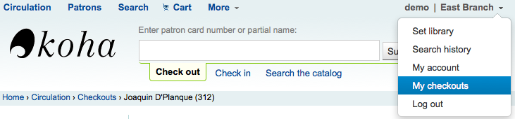
詳情
备注
點選館員介面右上角的姓名並選擇 ‘我的帳戶’ 就能近用其帳戶詳情
完整的讀者資訊顯示在詳情分頁。包括新增讀者時鍵入的所有連絡資訊、說明、客製化讀者屬性、訊息偏好等。

被標記為 ‘兒童’ 或 ‘專業’ 的讀者，其保證人資訊將顯示在其記錄內。
兒童讀者將列出其保證人

在保證人紀錄裡，列出所有的兒童與專業讀者

若讀者的年齡超出其讀者類別中定義的年齡範圍，他們的記錄中將出現警示。

流通摘要
Below the patron’s information on the details screen is a tabbed display of the items they have checked out, overdue, and on hold, among other things.
借出
The first tab shows the items the patron currently has checked out. The number of current checkouts will be displayed in the tab title.

备注
You can customize the columns of this table in the ‘Table settings’ section of the Administration module (table id: issues-table, under Patrons).
Click ‘Configure’ at the top right of the table to access the administration module directly.
相關的借出
If the patron has family at the library, staff can see what the other family members have checked out. The total number of checkouts among all family members will be displayed in the tab title.
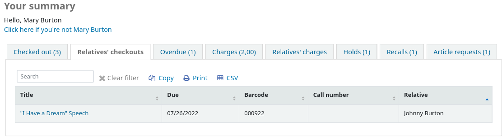
备注
You can customize the columns of this table in the ‘Table settings’ section of the Administration module (table id: relatives-issues-table, under Patrons).
Click ‘Configure’ at the top right of the table to access the administration module directly.
待付費用
The Charges tab will only show in the patron accounts that have unpaid amounts or unused credits. The total amount of unpaid charges or unused credits will be displayed in the tab title.
該標籤將顯示總金額，不含詳情。要查看詳情，請到 會計標籤。
Guarantees’ charges
This tab will appear if the patron has guarantees and those guarantees have unpaid charges in their account. The total amount owed by guarantees will be displayed in the tab title.
The tab will show the guarantee’s name and the total unpaid amount, without any details. To see details, go to the guarantee’s accounting tab.
預約
如果讀者擁有預約，則預約數量將顯示在此頁面的標題上，詳細訊息將顯示在頁面中。
备注
條碼號和索書號僅出現在館藏層次的預約或已確認的預約中。無需等待提取的書目層級預約將不會有條碼號或索書號。
這裡可以管理讀者的預約：更改取件圖書館，取消或暫停預約。
备注
You will only be able to suspend holds if the SuspendHoldsIntranet system preference is set to “Allow”.
备注
If, when suspending a hold, you want to be able to set a date at which to automatically resume the hold, set the AutoResumeSuspendedHolds system preference to “Allow” and make sure the unsuspend_holds cron job is activated.
催還
If recalls are enabled, currently active recalls requested by the patron will appear in this tab. The number of active recalls will be displayed in the tab title.
館員在這裡可以看到每個催還的狀態，並 管理它們。
論文請求
If the ArticleRequests system preference is enabled, and the circulation rules allow it, the patrons will be able to request articles, either through the OPAC or in the staff interface. The number of active requests will be displayed in the tab title.
讀者請求的詳情及其狀態可在此頁面查看。
Claims
If the patron has claimed they returned items, but those were not checked in, the claims will be shown in this tab. The number of resolved and unresolved claims will be displayed in the tab title. The first number, in green (or in gray if it’s 0), represents the number of resolved claims and the second number, in yellow (or in gray if it’s 0), represents the number of unresolved claims.
From this tab, staff can edit claim notes and resolve claims.
限制
所有的讀者都有限制分頁。未被限制的讀者在此分頁可見到該訊息。
被限制的讀者將在此顯示其讀者號及限制的事項。
- There are at least four kinds of restrictions:
手冊
逾期
停權
離館除籍
使用 ‘新增人工限制’ 連結，您可新增限制於讀者的記錄內。這適用於需要在讀者記錄上手動設置任何類型的限制。
Type: if the PatronRestrictionTypes system preference is enabled, you will have a choice of restriction types. This list can be managed from the patron restriction types administration page
評論：輸入一個評論以解釋該限制
過期：可選擇輸入該限制的到期日期。如果沒有過期日期，該限制將留在文件上，直到它被刪除。如果有一個到期日，該限制將自動被刪除。

如果想要在發送逾期通知時限制讀者，可以按照 逾期通知/狀態啟動器 的設定，自動設置逾期限制。
This restriction will not be removed automatically when the overdue items are returned unless the AutoRemoveOverduesRestrictions system preference is set to ‘Do’.
在 :ref:`流通規則 <circulation-and-fines-rules-label>`中，除了罰款外，也可以選擇停用讀者以罰款。在這種情況下，還入逾期的文件將觸發停用限制。
如果已經為讀者發出了 離館 ，可能會限制他們。離館一旦確認，讀者將自動被限制。
Patrons can also be restricted by setting flags in their accounts.
限鄅讀者記錄會阻止借出。事實上，會在借出時出現紅色訊息。
Restrictions may also prevent renewing items if the RestrictionBlockRenewing system preference is set to ‘block’.
在OPAC, 讀者會收到訊息得知他們的帳號已凍結。他們不能再從OPAC進行預約.
If you have patrons that have more than one restriction, you can choose to cumulate their restriction periods or not through the CumulativeRestrictionPeriods system preference.
备注
如果您想限制讀者進行多項活動, 因為他們的記錄不佳, 請確認以下系統偏好:
Set the OverduesBlockCirc system preference to ‘Block’ to prevent patrons who have overdue materials from checking out other materials.
Set the OverduesBlockRenewing system preference to ‘block renewing for all the patron’s items’ or ‘block renewing only for this item’ to prevent patrons who have overdue materials from renewing their loans.
Enter values in the noissuescharge and NoIssuesChargeGuarantees system preferences in order to block checking out to patrons who have more than a certain amount in fines or to patrons whose guarantees owe more than a certain amount.
Enter a value in the maxoutstanding system preference to prevent patron from placing holds on the OPAC if they owe more than a certain amount.
Enter a value in the OPACFineNoRenewals system preference to prevent patron who owe more than a certain amount to renew their loans from the OPAC.
Set the BlockExpiredPatronOpacActions system preference to ‘Block’ if you want to prevent patron whose membership has expired to place hold or renew their loans from the OPAC.
讀書會
If you use patron clubs, patrons will have a tab in their record indicating which club they are enrolled in, if any. The first number in the tab title is the number of clubs in which the patron is enrolled, and the second number is the number of clubs the patron is not enrolled in.
帳戶
The patron’s complete accounting history will appear on the Accounting tab. The Accounting tab will show all types of charges and credits: overdue fines, membership fees, rental fees, hold fees and any other charge you may have for patrons.
备注
您可以在管理模組的 ‘Table settings’ 部份, 在OPAC項目中自定義此表的列（table id：帳戶-罰款）。
备注
It’s possible to print a summary of outstanding charges and unused credits in the patron’s account by clicking ‘Print’ at the top of the page and choosing the ‘Print account balance’.

‘Print summary’ will print a full summary of the patron’s account, including outstanding charges.
此交易表格將顯示以下的欄：
日期：收費，付款或還款的日期
罰款顯示的是最後一天累積的罰款
帳戶類型：是什麼類型的收費、付款或還款
如果帳戶類型可能具有隨附的 狀態，它將與帳戶類型一起顯示在括弧中。
收費說明：包括逾期罰款的逾期日以及連結至該館藏記錄
备注
For overdue fines, the default is the title and the due date. You can customize this by editing the OVERDUE_FINE_DESC template in the Notices and slips tool.
條碼：如果費用連結到特定館藏，則顯示的條碼
Call number: if the charge is linked to a particular item, the item’s call number is displayed
到期日：如果收費是逾期罰款，將顯示到期日
還入日期：如果費用是逾期罰款，則顯示還入日期
借出日期：如果該費用是逾期罰款，則顯示借出日期
所屬圖書館：如果費用連結到特定館藏，則顯示所屬圖書館
說明：與此收取/支付有關的說明
若允許讀者從 OPAC 使用 PayPal (EnablePayPalOpacPayments) 支付罰款，可從說明看到 以 ‘PayPal’ 支付其館藏的罰款
金額：支付或收取的總額
待結清：仍未結清的金額
動作：
在帳戶線上可執行的一系列操作，詳見下文
點選表單上方的 ‘篩選已付交易’ 隱藏所有已完成的交易且可從搜尋盒找尋特定的支付或交易。
動作
Action buttons will be available for the different account lines depending on the user’s permissions and the account type and status.
A button to print or email a receipt or invoice for that line item
备注
If the line item is a credit (payment, writeoff or other credit), the receipt that will be printed will be the ACCOUNT_CREDIT notice. It can be customized in the Notices and slips tool.
If the line item is a debit (a charge), the invoice that will be printed will be the ACCOUNT_DEBIT notice. It can be customized in the Notices and slips tool.
按鈕會顯示有關費用和已付款的更多詳細訊息
取消（撤銷）付款/信用的按鈕
這個按鈕只出現在付款/還款項目上。當該行作廢時，它將撤銷付款過程，恢復付款/還款可能先前被用來抵消的任何債務/還款的金額。這個動作最常用於糾正那些記錄了付款但實際上從未收到的情況。信用額度將被設定為零，並更新為 VOID。
一個取消 (移除) 收費/付款的按鈕
這個按鈕只出現在尚未有任何付款/還款應用的收費/付款項目上。在取消該行時，它將被標記為 ‘取消’，並將增加一個 ‘取消 ‘行，以抵消它。這一操作最常用於糾正錯誤收費的情況。
用於支付未結金額的費用/付款的按鈕
This button will appear against any charge/debit with an outstanding amount. The subsequent page can be used to pay or writeoff the line partially or in full with a PAYMENT or WRITEOFF line will being added.
發放信用支付的一個按鈕
針對收費/付款發放退款的按鈕
這個按鈕將出現在任何已經支付或部分支付的收費/付款項目上，並且你有 退款許可。隨後的模式對話將允許您部分或全部退還抵消的債務，或是以`現金`的方式。
將折扣應用於收費/付款的按鈕
這個按鈕將出現在任何尚未被還款/付款所抵消的費用/付款，並且你擁有 折扣許可。隨後的模式對話將允許你在收費時增加折扣。
收取罰款/費用
Most fees and fines will be charged automatically if the fines cron job is running. Fines will also be charged when an overdue item is checked in if the CalculateFinesOnReturn system preference is enabled.
新增人工發票
For fees that are not automatically charged, staff can create a manual invoice.
备注
Staff need the manual_invoice (or superlibrarian) permission in order to add manual credits to a patron’s account.
Click on the ‘Create manual invoice’ tab
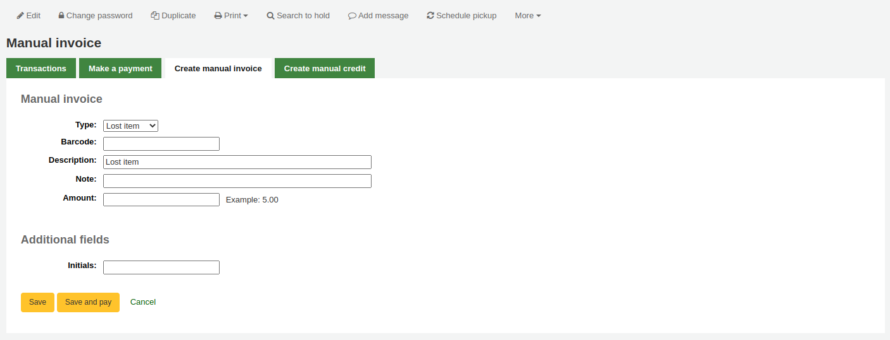
Type: choose the type of invoice to create.
备注
加入管理模組的 借方類型，就能把新增的值納入下拉選單的人工發票項目中。
Barcode: if the fee is associated with an item you can enter its barcode so that the line item shows a link to that item.
Description: enter the description of the charge.
Note: if needed, add a note about this charge.
Amount: enter the amount of the charge, do not enter currency symbols, only numbers and decimals
If any additional fields were set up for account line debits, they will appear here.
Click ‘Save’ to charge the amount to the patron’s account, or
Click ‘Save and pay’ to charge the amount to the patron’s account and go directly to the payment page.
Paying and writing off charges
Each account line can be paid in full or written off using the ‘Make a payment’ tab.
备注
您可以在管理模組的 :ref:`’欄組態’<column-settings-label>`部份, 自定義此表的列(table id: pay-fines-table)。
Each account line can be paid in full, partially paid, or written off.
Paying an individual charge in full
To pay an individual charge in full:
If you need to add a note about the payment, click ‘Add note’ and type in the note before proceeding.
Click the ‘Pay’ button next to the charge to be paid in full.
A table will show the details of the charge being paid, the full amount of the charge will be populated for you in the ‘Amount being paid’ and the ‘Amount tendered’ fields.
备注
If you made a mistake and this charge should be written off instead, you can switch between ‘Pay’ and ‘Write off’ mode using the buttons located at the top of this tab. See Writing off an individual charge below.
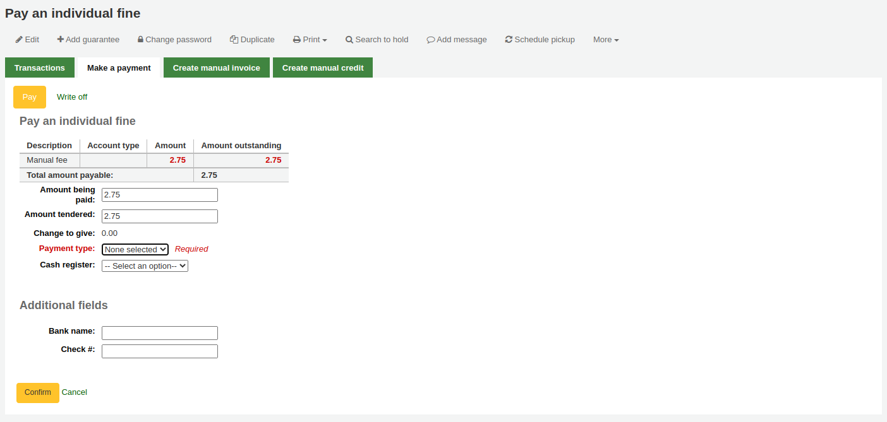
Amount being paid: this is the amount that will be debited from the charge. When paying a charge in full, this should be the full amount.
Amount tendered: this is the actual amount handed to you by the patron, it will be used to calculate the change. For example, if a patron has a 2.75$ fine to pay, and they pay with a 5$ bill, enter 5 in ‘Amount tendered’.
Change to give: if the amount being paid and the amount tendered are different (i.e. more money was collected) the amount of change to be given will be displayed.
Payment type: choose the type of payment.
备注
This field will only appear if one or more values are defined under the PAYMENT_TYPE authorized value.
备注
This field will be required if either the UseCashRegisters system preference or the RequirePaymentType system preference is enabled.
Cash register: if the UseCashRegisters system preference is enabled, you will have a choice of cash register in which to enter the transaction.
备注
If the UseCashRegisters system preference is enabled, and the CASH payment type is chosen above, you will be required to choose a cash register for the payment.
Whether or not this field is required when another payment type is chosen is determined by the RequireCashRegister system preference.
If any additional fields were set up for account line credits, they will appear here.
Click ‘Confirm’.
If change was to be given back to the patron, a pop-up window will appear to remind you, click ‘Yes’ to confirm that you gave back the correct amount and confirm the payment.

The charge’s outstanding amount will be set to zero (fully paid), and a payment line will be added in the patron’s transactions.
备注
If the FinePaymentAutoPopup system preference is enabled, a print dialogue window will display. The receipt printed uses the letter ACCOUNT_CREDIT, which can be modified in the Notices and slips tool. If change was given for this transaction the details will be included when using this system preference.
In addition to printing receipts you can enable email receipts for payment and writeoff transactions with the UseEmailReceipts system preference. The email sent uses the ACCOUNT_PAYMENT letter, which can be modified in the Notices and slips tool.
Partially paying an individual charge
To partially pay an individual charge:
Click the ‘Pay’ button next to the charge to be partially paid.
A table will show the details of the charge being paid, the full amount of the charge will be populated for you in the ‘Amount being paid’ and the ‘Amount tendered’ fields.
备注
If you made a mistake and this charge should be written off instead, you can switch between ‘Pay’ and ‘Write off’ mode using the buttons located at the top of this tab. See Partially writing off an individual charge below.
Amount being paid: this is the amount that will be debited from the charge. When partially paying a charge, enter the amount that should be paid.
Amount tendered: this is the actual amount handed to you by the patron, it will be used to calculate the change. For example, if a patron has a 2.75$ fine to pay, and they pay with a 5$ bill, enter 5 in ‘Amount tendered’.
Change to give: if the amount being paid and the amount tendered are different (i.e. more money was collected) the amount of change to be given will be displayed.
Payment type: choose the type of payment.
备注
This field will only appear if one or more values are defined under the PAYMENT_TYPE authorized value.
备注
This field will be required if either the UseCashRegisters system preference or the RequirePaymentType system preference is enabled.
Cash register: if the UseCashRegisters system preference is enabled, you will have a choice of cash register in which to enter the transaction.
备注
If the UseCashRegisters system preference is enabled, and the CASH payment type is chosen above, you will be required to choose a cash register for the payment.
Whether or not this field is required when another payment type is chosen is determined by the RequireCashRegister system preference.
If any additional fields were set up for account line credits, they will appear here.
Click ‘Confirm’.
If change was to be given back to the patron, a pop-up window will appear to remind you, click ‘Yes’ to confirm that you gave back the correct amount and confirm the payment.
The charge will be updated to show the original amount and the current amount outstanding, and a payment line will be added in the patron’s transactions.
备注
If the FinePaymentAutoPopup system preference is enabled, a print dialogue window will display. The receipt printed uses the letter ACCOUNT_CREDIT, which can be modified in the Notices and slips tool. If change was given for this transaction the details will be included when using this system preference.
In addition to printing receipts you can enable email receipts for payment and writeoff transactions with the UseEmailReceipts system preference. The email sent uses the ACCOUNT_PAYMENT letter, which can be modified in the Notices and slips tool.
Paying an amount towards all charges
To pay an amount towards all charges:
Click the ‘Pay amount’ button.
The total amount outstanding in the patron’s account will be displayed, and populated for you in the ‘Amount being paid’ and the ‘Amount tendered’ fields.
Total amount outstanding: this is the total unpaid charges in the patron’s account.
Amount being paid: this is the amount that will be debited from the outstanding amount. Enter the amount that will be paid.
Amount tendered: this is the actual amount handed to you by the patron, it will be used to calculate the change. For example, if a patron has a 2.75$ fine to pay, and they pay with a 5$ bill, enter 5 in ‘Amount tendered’.
Change to give: if the amount being paid and the amount tendered are different (i.e. more money was collected) the amount of change to be given will be displayed.
Payment type: choose the type of payment.
备注
This field will only appear if one or more values are defined under the PAYMENT_TYPE authorized value.
备注
This field will be required if either the UseCashRegisters system preference or the RequirePaymentType system preference is enabled.
Cash register: if the UseCashRegisters system preference is enabled, you will have a choice of cash register in which to enter the transaction.
备注
If the UseCashRegisters system preference is enabled, and the CASH payment type is chosen above, you will be required to choose a cash register for the payment.
Whether or not this field is required when another payment type is chosen is determined by the RequireCashRegister system preference.
Note: if needed, add a note about this payment.
If any additional fields were set up for account line credits, they will appear here.
Click ‘Confirm’.
If change was to be given back to the patron, a pop-up window will appear to remind you, click ‘Yes’ to confirm that you gave back the correct amount and confirm the payment.
The charges’ outstanding amounts will be updated, with the payment applied to oldest charges first, and a payment line will be added in the patron’s transactions.
备注
If the FinePaymentAutoPopup system preference is enabled, a print dialogue window will display. The receipt printed uses the letter ACCOUNT_CREDIT, which can be modified in the Notices and slips tool. If change was given for this transaction the details will be included when using this system preference.
In addition to printing receipts you can enable email receipts for payment and writeoff transactions with the UseEmailReceipts system preference. The email sent uses the ACCOUNT_PAYMENT letter, which can be modified in the Notices and slips tool.
Paying selected charges
To pay only some charges:
Check the selection boxes next to the charges to be paid.
Click the ‘Pay selected’ button.
The total outstanding amount for the selected charges will be displayed, and populated for you in the ‘Amount being paid’ and the ‘Amount tendered’ fields.
Total amount outstanding: this is the total unpaid amount for the selected charges.
Amount being paid: this is the amount that will be debited from the total outstanding amount of the selected charges. Enter the amount that will be paid.
Amount tendered: this is the actual amount handed to you by the patron, it will be used to calculate the change. For example, if a patron has a 2.75$ fine to pay, and they pay with a 5$ bill, enter 5 in ‘Amount tendered’.
Change to give: if the amount being paid and the amount tendered are different (i.e. more money was collected) the amount of change to be given will be displayed.
Payment type: choose the type of payment.
备注
This field will only appear if one or more values are defined under the PAYMENT_TYPE authorized value.
备注
This field will be required if either the UseCashRegisters system preference or the RequirePaymentType system preference is enabled.
Cash register: if the UseCashRegisters system preference is enabled, you will have a choice of cash register in which to enter the transaction.
备注
If the UseCashRegisters system preference is enabled, and the CASH payment type is chosen above, you will be required to choose a cash register for the payment.
Whether or not this field is required when another payment type is chosen is determined by the RequireCashRegister system preference.
Note: if needed, add a note about this payment.
If any additional fields were set up for account line credits, they will appear here.
Click ‘Confirm’.
If change was to be given back to the patron, a pop-up window will appear to remind you, click ‘Yes’ to confirm that you gave back the correct amount and confirm the payment.
The selected charges’ outstanding amounts will be updated, with the payment applied to oldest charges first, and a payment line will be added in the patron’s transactions.
备注
If the FinePaymentAutoPopup system preference is enabled, a print dialogue window will display. The receipt printed uses the letter ACCOUNT_CREDIT, which can be modified in the Notices and slips tool. If change was given for this transaction the details will be included when using this system preference.
In addition to printing receipts you can enable email receipts for payment and writeoff transactions with the UseEmailReceipts system preference. The email sent uses the ACCOUNT_PAYMENT letter, which can be modified in the Notices and slips tool.
Writing off all charges
To write off all charges in a patron’s account:
Click the ‘Write off all’ button
Confirm the writeoff
All charges’ outstanding amounts will be set to zero (fully paid/written off), and a writeoff line will be added in the patron’s transactions.
Writing off an individual charge
To write off a single charge:
If you need to add a note about the writeoff, click ‘Add note’ and type in the note before proceeding
Click the ‘Write off’ button next to the charge to be written off
A table will show the details of the charge being written off, the full amount of the charge will be populated for you in the ‘Writeoff amount’ field.
备注
If you made a mistake and this charge should be paid instead, you can switch between ‘Pay’ and ‘Write off’ mode using the buttons located at the top of this tab. See Paying an individual charge in full above.
Writeoff amount: this is the amount that will be debited from the charge. When writing off a charge completely, this should be the full amount.
If any additional fields were set up for account line credits, they will appear here.
Click ‘Write off this charge’
The charge’s outstanding amount will be set to zero (fully paid/written off), and a writeoff line will be added in the patron’s transactions.
备注
If the FinePaymentAutoPopup system preference is enabled, a print dialogue window will display. The receipt printed uses the letter ACCOUNT_CREDIT, which can be modified in the Notices and slips tool. If change was given for this transaction the details will be included when using this system preference.
In addition to printing receipts you can enable email receipts for payment and writeoff transactions with the UseEmailReceipts system preference. The email sent uses the ACCOUNT_WRITEOFF letter, which can be modified in the Notices and slips tool.
Partially writing off an individual charge
To partially write off a single charge:
If you need to add a note about the writeoff, click ‘Add note’ and type in the note before proceeding
Click the ‘Write off’ button next to the charge to be written off
A table will show the details of the charge being written off, the full amount of the charge will be populated for you in the ‘Writeoff amount’ field.
备注
If you made a mistake and this charge should be paid instead, you can switch between ‘Pay’ and ‘Write off’ mode using the buttons located at the top of this tab. See Partially paying an individual charge above.
Writeoff amount: this is the amount that will be debited from the charge. When partially writing off a charge, enter the amount to be written off.
If any additional fields were set up for account line credits, they will appear here.
Click ‘Write off this charge’
The charge will be updated to show the original amount and the current amount outstanding, and a writeoff line will be added in the patron’s transactions.
备注
If the FinePaymentAutoPopup system preference is enabled, a print dialogue window will display. The receipt printed uses the letter ACCOUNT_CREDIT, which can be modified in the Notices and slips tool. If change was given for this transaction the details will be included when using this system preference.
In addition to printing receipts you can enable email receipts for payment and writeoff transactions with the UseEmailReceipts system preference. The email sent uses the ACCOUNT_WRITEOFF letter, which can be modified in the Notices and slips tool.
Writing off selected charges
To write off only some charges:
If you need to add a note about the writeoff, click ‘Add note’ and type in the note before proceeding
Check the selection boxes next to the fines to be written off
Click the ‘Writeoff selected’ button
The total outstanding amount for the selected charges will be displayed, and populated for you in the ‘Writeoff amount’ field.
备注
If you made a mistake and this charge should be paid instead, you can switch between ‘Pay’ and ‘Write off’ mode using the buttons located at the top of this tab. See Paying selected charges above.
Writeoff amount: this is the amount that will be debited from the charge. When writing off the charges completely, this should be the full amount.
Note: if needed, enter a note about this writeoff.
If any additional fields were set up for account line credits, they will appear here.
Click ‘Confirm’
The selected charges’ outstanding amounts will be updated, with the writeoff applied to oldest charges first, and a writeoff line will be added in the patron’s transactions.
备注
If the FinePaymentAutoPopup system preference is enabled, a print dialogue window will display. The receipt printed uses the letter ACCOUNT_CREDIT, which can be modified in the Notices and slips tool. If change was given for this transaction the details will be included when using this system preference.
In addition to printing receipts you can enable email receipts for payment and writeoff transactions with the UseEmailReceipts system preference. The email sent uses the ACCOUNT_WRITEOFF letter, which can be modified in the Notices and slips tool.
取消罰款或收費
如果一個使用者被收取了費用，而且是錯誤的，你可以點擊執行欄中的 ‘取消收費’ 按鈕來取消該費用。

一旦點擊一個新的館藏將被新增到帳戶中，其 ‘取消費用’ 與被取消的費用金額相同。被取消的費用現在將具有 ‘取消’ 狀態，未付金額為0。

如果你錯誤地取消了一項收費，你可以使取消無效（參見 :ref:`無效付款 <void-payments-label>`下面）。
無效付款
若誤標記館藏為已支付，可點選右方的 ‘無效’ 恢復原狀

Once clicked a new line item will be added to the account showing the payment as ‘Voided’. The payment line is added back to the Pay fines tab as an outstanding charge.

新增人工額度
人工額度可以支付部份或豁免罰款。
备注
Staff need the manual_credit (or superlibrarian) permission in order to add manual credits to a patron’s account.
Click ‘Create manual credit’.
Type: choose the type of credit to apply.
备注
To add additional values to the manual credit type drop-down menu, add them to the credit types in the Administration module.
Barcode: if this credit is associated with an item you can enter that item’s barcode so that the line item links to the right item.
Description: enter the description of the credit.
Note: if needed, add a note about this credit.
Amount: enter the credit’s amount, do not enter currency symbols, only numbers and decimals.
Transaction type: choose the type of credit.
备注
This field will only appear if one or more values are defined under the PAYMENT_TYPE authorized value.
备注
This field will be required if either the UseCashRegisters system preference or the RequirePaymentType system preference is enabled.
Cash register: if the UseCashRegisters system preference is enabled, you will have a choice of cash register in which to enter the transaction.
备注
If the UseCashRegisters system preference is enabled, and the CASH transaction type is chosen above, you will be required to choose a cash register for the payment.
Whether or not this field is required when another transaction type is chosen is determined by the RequireCashRegister system preference.
If any additional fields were set up for account line credits, they will appear here.
Click ‘Add credit’.
This will add a credit line to the patron’s account.
备注
If the AccountAutoReconcile system preference is set to ‘Do’, the credit will automatically be used to reduce the outstanding amounts in the patron’s account, starting with the oldest charges.
备注
If the AutoCreditNumber system preference is enabled, credits will be numbered.
列印收據
帳號右方有個列印連結。按下該連結印出包括日期與說明的館藏收據以及待付款。

傳閱清單
可經由讀者紀錄的 ‘傳閱清單’ 分頁，查看該讀者訂閱的期刊傳閱清單。

在此分頁可看到並編輯此讀者所屬的傳閱清單。

流通紀錄
The circulation history tab will appear if you have set the intranetreadinghistory preference to allow it to appear. If you have the OPACPrivacy system preference set to ‘Allow’ and the patron has decided that the library cannot keep this information this tab will only show currently checked out items.
說明
您可以在管理模組的 :ref:`’欄組態’<column-settings-label>`部份, 自定義此表的列(table id: checkouthistory-table)。
To see when an item was renewed and by whom, click ‘View’ in the Number of renewals column.
在頁面右上角的其他選單裡，可找到選項，匯出今天還入的條碼清單。

產生每列一個條碼的文字檔。
預約記錄
預約紀錄選項顯示了讀者所做的所有預約，以及它們的狀態。
說明
您可以在管理模組的 :ref:`’欄組態’<column-settings-label>`部份, 自定義此表的列(table id: holdshistory-table)。
修改紀錄
If you have set your BorrowersLog to track changes to patron records, then this tab will appear. The Modification log will show when changes were made to the patron record. If you also have turned on the IssueLog and ReturnLog you will see checkins and outs on this screen as well.

館員欄位顯示改變內容的館員讀者號
此模組清單列出讀者模組的 ‘MEMBERS’
此作業將告知將儲存的記錄
Object 欄列列出修改過的 borrowernumber (如上例，我修改自己的記錄)
通知
設定 讀者訊息偏好 為 新增 或 編輯 讀者。此分頁將顯示已送出及待送出的訊息：

勾選題名訊息，將展開內容，顯示完整的訊息，以供送出。

待送出或送出失敗的訊息，將出現 ‘重送’ 該訊息的選項，在其狀態下有重送鈕。

統計
Depending on what you set for the values of your StatisticsFields system preference, you can see statistics for one patron’s circulation actions.

檔案
If you set the EnableBorrowerFiles preference to ‘Do’ the Files tab will be visible on the patron information page.

從此上傳附加於讀者紀錄的檔案。

已上傳所有的檔案，將顯示在表單裡，並可從該表單繼續上傳其他檔案。

採訪建議
讀者提出採訪建議後，在讀者記錄裡將出現採訪建議分頁。
在此可看到所有的採訪建議及其現況，您也可以讀者身份點選上方的 ‘新增採訪建議’。
Learn more about managing purchase suggestions in the Acquisitions chapter of this manual.
讀者離館除籍
A discharge is a certificate that says the patron has no current checkouts and no holds. To enable this option on the patron record, set the useDischarge system preference to ‘Allow’.
备注
In France, a “quitus” (“discharge”) is needed if you want to register for an account in a library or a university.
备注
學術圖書館多半要求讀者先結清借出才能畢業。
Emitting a discharge
To generate a discharge for a specific patron, click the ‘Discharges’ tab on the left of the patron record.
Or click on the ‘More’ button and choose ‘Discharge’.
If the patron can have a discharge generated, it will have a button that says ‘Generate discharge’
If the patron has checkouts or holds, you’ll see a message explaining why the patron cannot be discharged.
Once the letter is generated you will have a PDF to download.
备注
You can customize this message in the Notices and slips tool. The letter code is DISCHARGE.
备注
You can style the PDF using the NoticeCSS preference, or add inline CSS in the DISCHARGE letter in the Notices and slips tool.
The patron will have a restriction added to their account.
A history of discharges will be added to the ‘Discharges’ tab.
Approving discharge requests
Patrons can request discharges via the OPAC. Any pending discharges will be listed below the menu buttons on the main staff interface page, with other pending requests.

Clicking the pending discharge request link will open a screen where you can approve those discharges by clicking ‘Allow’.
居家讀者
讀者在居家流通方面可以具有三種角色：借閱者，選擇者或運送者。
重要
In order to use the housebound module, the HouseboundModule and ExtendedPatronAttributes system preferences must be enabled.
選擇者
If you have enabled the housebound module, with the HouseboundModule system preference, you will see that patrons now have a new section in their record called ‘Housebound roles’.

點擊 ‘新增’ 鈕，將該讀者標記為 ‘選擇者’。

選擇者負責為居家讀者選擇材料。
運送者
在 ‘居家角色’ 中，點擊 ‘新增’ 鈕以將該讀者標記為 ‘運送者’。
運送者負責在特定的日期和時間將選定的物料運送到居家讀者。
居家借閱者
要為居家讀者建立居家檔案，請在其記錄中點擊 ‘居家’ 選項。
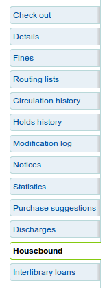
這裡可以編輯他們的居家資訊。
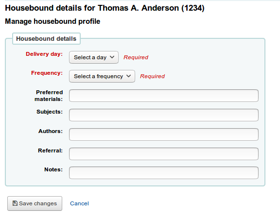
交貨日期：選擇讀者希望的收貨日期（或 ‘隨時’）。
頻率：選擇他們要收貨的頻率。
說明
頻率通過 授權值 的 HSBND _FREQ 清單進行管理。
偏好材料：輸入說明，以幫助選擇者為居家的讀者選擇合適的文件。
例如：書籍，DVD，雜誌等。
主題：如果居家讀者有偏愛的特定主題，請在此處輸入。這將幫助選擇者為讀者選擇有興趣的文件。
例如：浪漫，食譜，驚悚片等。
著作：如果居家讀者有喜歡的作者，請在此處輸入。
例如：Danielle Steel，James Patterson等。
推薦：如果居家讀者有推薦，請在此輸入。
說明：輸入其他可能對選擇者或運送者有幫助的說明。
點擊 ‘儲存變更’ 鈕以保存內部設定檔。
配合運送
要計劃拜訪，請查看該居家讀者的記錄。
在他們的居家表單中，可以建立運送。
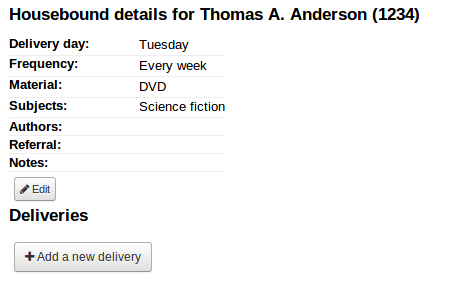
點擊 ‘新增運送’。

填寫資訊 ：
日期：輸入運送日期。
時間：選擇一天中的運送時間。早上，下午或晚上。
選擇者：選擇一個負責該居家讀者材料的選擇者。
運送者：選擇一個運送者，他將負責提取材料並將其帶到居家讀者那裡。

通過報表將計劃的交付通知給選擇者和運送者。 可以在SQL報表庫中的範例報表中找到 https://wiki.koha-community.org/wiki/SQL_Reports_Patrons#Patron_Characteristics.
催還記錄
如果 催還和啟用, active and past :Ref:`讀者要求催還<request-recalls-opac-label>`會出現在這個選項裡。
館員在這裡可以看到每個催還的狀態，並 管理它們。
館員介面的雙重認證
Koha提供雙重認證（2FA）來登入館員介面。
這種雙重驗證使用基於時間的一次性密碼（TOTP）。 TOTP是一個只能使用一次的密碼，並且只在有限時間內有效。
想使用雙重驗證的使用者必須有一個應用程序來生成這些TOTP。任何認證器應用程序，如Google認證器、和OTP、免費OTP和許多其他應用程序都可以使用。建議使用能夠備份其2FA帳戶的應用程序（基於雲或自動）。
Turn on the two-factor authentication with the TwoFactorAuthentication system preference.
一旦這樣做了，館員使用者必須通過點擊頁面頂端的用戶名並點擊 ‘我的帳戶’ 進入他們的帳戶。
使用者必須進入更多 > 管理雙重驗證。
當第一次進入這個頁面時，狀態應該是 ‘已禁用’。
點擊 ‘啟用雙重身份驗證’
將會出現一個二維碼。該代碼必須用認證器應用程序掃描（建議見上文）。
备注
如果應用程序不允許掃描二維碼，頁面會給出可以手動輸入的憑證（帳戶、鑰匙、基於時間）。
一旦掃描了QR碼，該應用程序將返回一個基於時間的PIN碼。用戶必須在PIN碼欄位中輸入該PIN碼，並點擊 ‘用雙因素應用程序註冊’。
現在雙重驗證的狀態將被啟用。
备注
An email will be sent to the user’s email address to alert them that the two-factor authentication has been enabled on their account.
You can customize this message in the Notices and slips tool. The letter code is 2FA_ENABLE.
當這個使用者試圖登錄館員介面時，他們將像往常一樣輸入他們的用戶名稱和密碼，但也要輸入一個雙因素認證代碼。

使用者必須打開他們的認證器應用程序，生成一個基於時間的一次性密碼，並將其輸入該欄位以便登錄。
备注
Alternatively, if the user doesn’t have the app handy, they can click on ‘Send the code by email’, which will send them an email with a time-based one-time password for them to use.
The email is based on the 2FA_OTP_TOKEN notice template, which can be customized in the Notices and slips tool.
如果使用者希望禁用他們的雙因素認證，他們可以到館員介面的帳戶，點擊更多>管理雙因素認證，然後點擊 ‘禁用雙因素認證’。
备注
An email will be sent to the user’s email address to alert them that the two-factor authentication has been disabled on their account.
You can customize this message in the Notices and slips tool. The letter code is 2FA_DISABLE.
搜尋讀者
勾選讀者模組的連結進入搜尋/瀏覽讀者螢幕。從此可搜尋讀者。
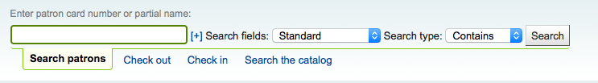
勾選代理商搜尋盒右方的加號 [+] 打開進階讀者搜尋 包括讀者類型與圖書館的限制欄位。

以頁面左方的選項限制顯示的結果數量。

依照從 ‘搜尋欄位’ 選擇的內容，您可從不同方式搜尋讀者。
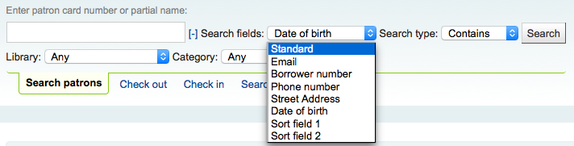
標準：
鍵入姓、名、電子郵件或條碼的任何部份
電子郵件：
鍵入電子郵件的任何部分並選擇 ‘包括’ 而不是 ‘開始’
讀者號：
鍵入讀者號
電話號碼：
鍵入系統內的電話號碼或以空格區分各段號碼。
例如：可以完全一樣的搜尋(212) 555-1212，以212 555 1212搜尋，也可找到相同的結果
街路：
鍵入讀者地址的任何片斷 (包括所有的地址欄位) 並選擇 ‘包括’ 不選 ‘開始’ 找尋地址裡的任何字串
生日
Birth dates should be entered using the format set forth in the dateformat preference.
排序欄位1
此為使用於圖書館讀者的客製化欄位。
排序欄位2
此為使用於圖書館讀者的客製化欄位。
您可選擇搜尋欄位內的起始或包括的字串。選擇 ‘包括’ 就像是萬用字元搜尋。

點選上方的連結文字，可以瀏覽讀者紀錄。

如果你的搜尋只返回一個結果，你將直接被帶到該讀者的檔案。如果你的搜尋返回一個以上的結果，你將得到一個可供選擇的列表。
备注
You can customize the columns of this table in the ‘Table settings’ section of the Administration module, under the patrons tab (table id: memberresultst).
與讀者溝通
Koha提供了幾個與讀者溝通的選項，其中一些已經在本章中介紹過。
OPAC 說明
OPAC說明是通過 新增讀者表格，在 ‘圖書館設定’ 部分新增到讀者的文件中。
它們顯示在OPAC中讀者線上帳戶的 :ref:’你的摘要’部分<your-summary-label>`。
在館員介面，OPAC說明將在讀者檔案的 ‘圖書館使用’ 部分。
OPAC 訊息
使用 ‘新增訊息’ 按鈕將OPAC訊息新增到讀者的檔案中。
要給讀者留言，使其能夠在OPAC中看到，請在 ‘為其新增訊息’欄中選擇 “OPAC - 讀者的名字”。在框中輸入你的訊息，或在下拉選單中選擇一個預定義的訊息。
备注
預定義的訊息被新增到 BOR_NOTES :ref:`容許值價值類別<existing-values-label>`中
Once saved, the patron will be able to see the message in the ‘Your summary’ section of their online account. The patron will also be able to see the date on which the message was added as well as the name of the branch. They will have the option to dismiss the message. This will hide the message from their OPAC account and mark it as read, but it will not delete the message.
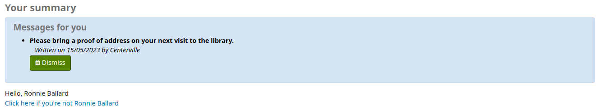
在館員介面，OPAC訊息顯示在讀者的詳細頁面上，在頁面的頂端，就在一排執行按鈕的下面。
它也會出現在借出頁面，在借出箱的右邊。
If you need to edit the message, click the ‘Edit’ button next to the message, edit the text and click ‘Save’.
警告
If you edit a message that has been dismissed by the patron, it will stay as ‘Read’ and the patron will not see your edit.
If the patron dismisses the message, a ‘Read’ mention with the date will appear next to the message in the staff interface to inform staff members that this message was read by the patron.
提前通知及預約通知
If you have enabled the EnhancedMessagingPreferences system preference, you cat set advance notices as well as hold notices when adding a new patron or editing a patron.
If the EnhancedMessagingPreferencesOPAC system preference is set to ‘show’, patrons will be able to modify their messaging preferences in their online account.
到期通知：館藏到期當天的通知
Customize this notice by editing the DUE or DUEDGST notices in the Notices and slips tool
提早通知：用於通知讀者其借出的館藏即將到期 (讀者可指定提前的天數)
Customize this notice by editing the PREDUE or PREDUEDGST notices in the Notices and slips tool
Hold filled: A notice when you have confirmed the hold is waiting for the patron, and when a curbside pickup is scheduled.
Customize the hold filled notice by editing the HOLD template in the Notices and slips tool.
Customize the curbside pickup scheduled notice by editing the NEW_CURBSIDE_PICKUP template in the Notices and slips tool.
還入館藏：讀者剛還入的館藏清單
通過在 :ref:`通知和單據工具<notices-and-slips-label>`中編輯CHECKIN 通知，自定義該通知
借出館藏：通知讀者剛借出或續借的館藏，就是電子版的借出收條
Customize this notice by editing the CHECKOUT notice in the Notices and slips tool
备注
If the RenewalSendNotice system preference is set to ‘Send’, this notice will be called ‘Item checkout and renewal’.
For renewals, the notice sent is RENEWAL.
Interlibrary loan ready: A notice that is sent when an inter-library loan the patron requested has been fulfilled and is now ready for pickup.
Customize this notice by editing the ILL_PICKUP_READY notice in the Notices and slips tool
This option will only appear if the ILLModule system preference is enabled.
Interlibrary loan unavailable: A notice that is sent when an inter-library loan the patron requested has been cancelled because it was unavailable.
Customize this notice by editing the ILL_REQUEST_UNAVAIL notice in the Notices and slips tool
This option will only appear if the ILLModule system preference is enabled.
自動更新。通知讀者他們的借出已經自動更新，或自動更新有問題的通知。
通過編輯AUTO_RENEWAL 或 AUTO_RENEWAL_DGST 通知來自定義該通知，在 通知 & 單據工具
This option will only appear if the AutoRenewalNotices is set to “according to patrons messaging preferences”
Hold reminder: A notice that is sent a certain number of days after the hold has been filled, in order to remind the patron that they have to pick it up.
Customize this notice by editing the HOLD_REMINDER notice in the Notices and slips tool.
This notice requires the holds_reminder.pl cron job.
Interlibrary loan updated: A notice that is sent when an inter-library loan the patron requested has been updated.
Customize this notice by editing the ILL_REQUEST_UPDATE notice in the Notices and slips tool
This option will only appear if the ILLModule system preference is enabled.
按 ‘只有摘要’ 盒後讀者就只接收摘要式通知。把所有此類型 (3 天內到期的資訊置於一個電子郵件) 的訊息納入一個電子郵件寄出。
目前支持的交付方式有：
電子郵件
SMS（文字簡訊）
自動通話系統
列印
為了產生預先通知（預先通知和到期館藏），你需要運行 預先_通知.pl 工作排程。然後， :ref:`預先_訊息_順序.pl 工作排程 <cron-message-queue-label>`將發送這些通知，或者 :ref:`集合_影印_通知.pl 工作排程 <cron-print-hold-notices-label>`將把它們收集在一個不錯的檔案中，你可以影印出來，通過普通郵件發送。
逾期通知
Overdue notices are managed in Notices & slips and when they are sent is managed in Overdue notice/status triggers.
讀者不能像其他通知（如 提前通知或保留通知）那樣選擇不接收逾期通知
為了生成逾期通知，你需要執行 逾期_通知.pl 工作排程。然後， :ref:`過程_訊息_順序.pl 工作排程 <cron-message-queue-label>`將發送這些通知，或者 :ref:`集合_影印_通知.pl 工作排程 <cron-print-hold-notices-label>`將把它們收集在一個不錯的文件中，你可以影印出來，通過普通郵件發送。